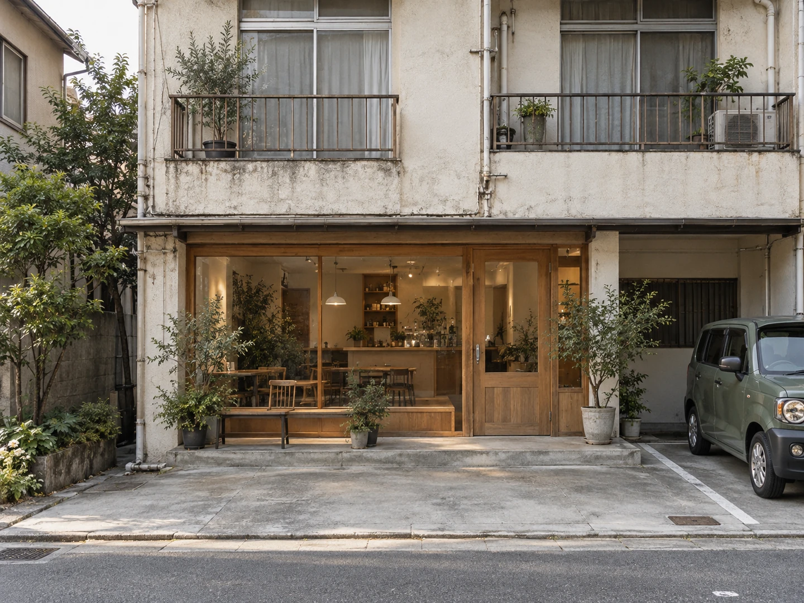

CONCEPT
設計した人が、
そのまま続けています
喫茶WAIは、秋田市旭南にあります。 建物は、築40年の賃貸アパート。その1階の車庫だった部分が、いまの店内です。
設計も、運営も、同じ人たち
改装を手がけたのは、建築とインテリアの設計をしている「キソン-アトリエ」。公式サイトには「運営は弊所が担い、メニューや置くもの、催しの設計にも関わっています」と書かれています。
お店が建つのは、旭川沿いの遊歩道と、歓楽街から続く一方通行の道に挟まれた土地です。 秋田市では昭和のはじめまで、川の舟で生活の物資を運んでいました。 その名残で、この辺りには船大工町・馬口労町・鍛治町といった旧町名が残っています。 いまも近くに、刃物屋や鉄工所、鍵屋があります。
町内の歴史を知る人が住む通りと、市の中心を流れる旭川の力を借りた「清々しい場所」が生まれることを想定しました。 キソン-アトリエ 公式サイト「喫茶WAI」のページより
場所にあるものを、そのまま使う。 古い建物も、川も、町の歴史も、なくさずに店のほうへ引き入れた、という作り方です。
